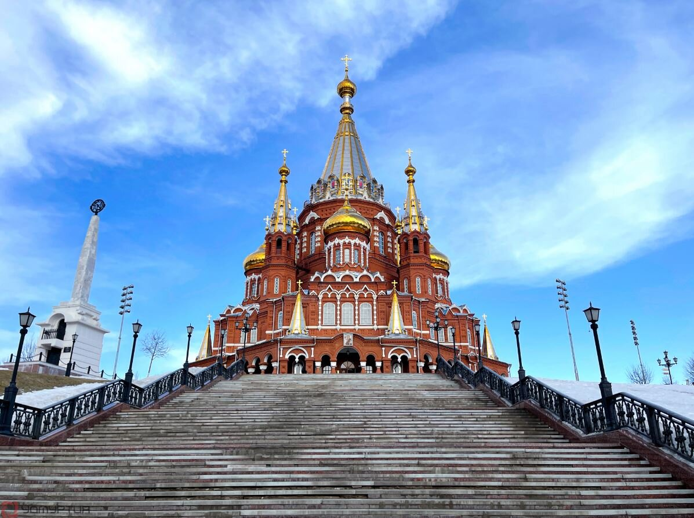
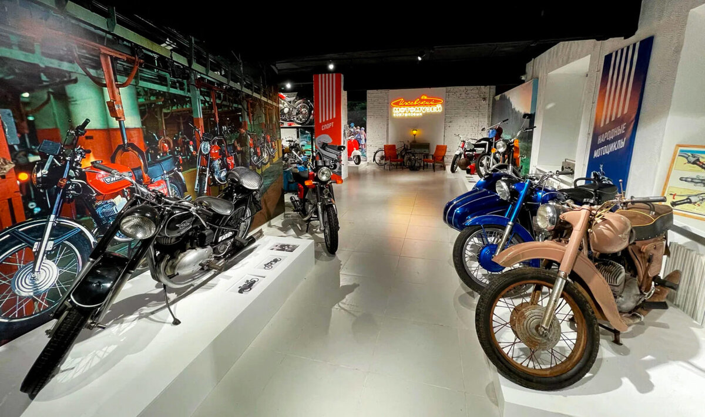
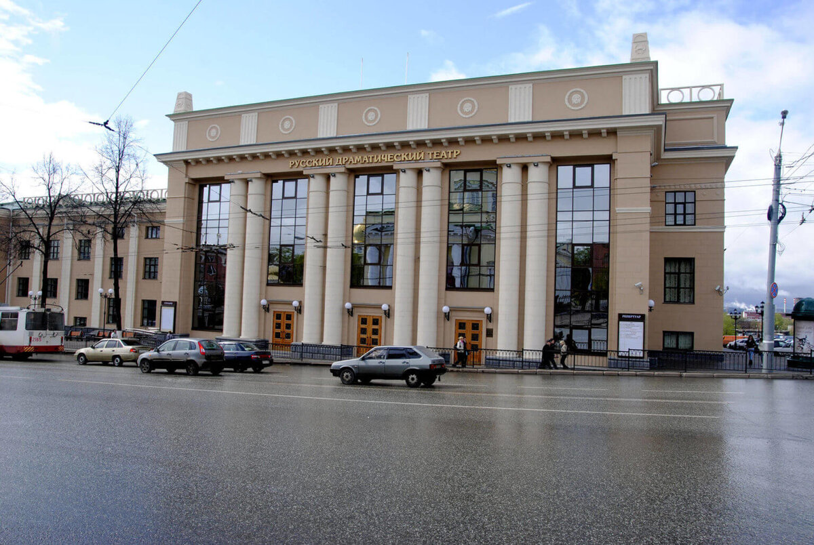
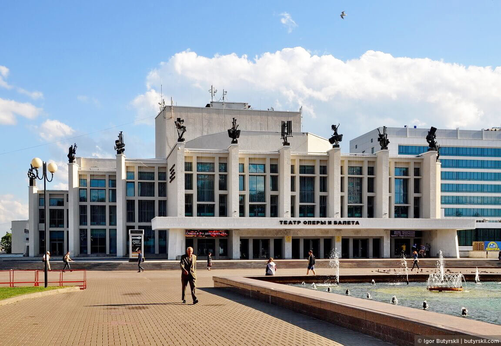
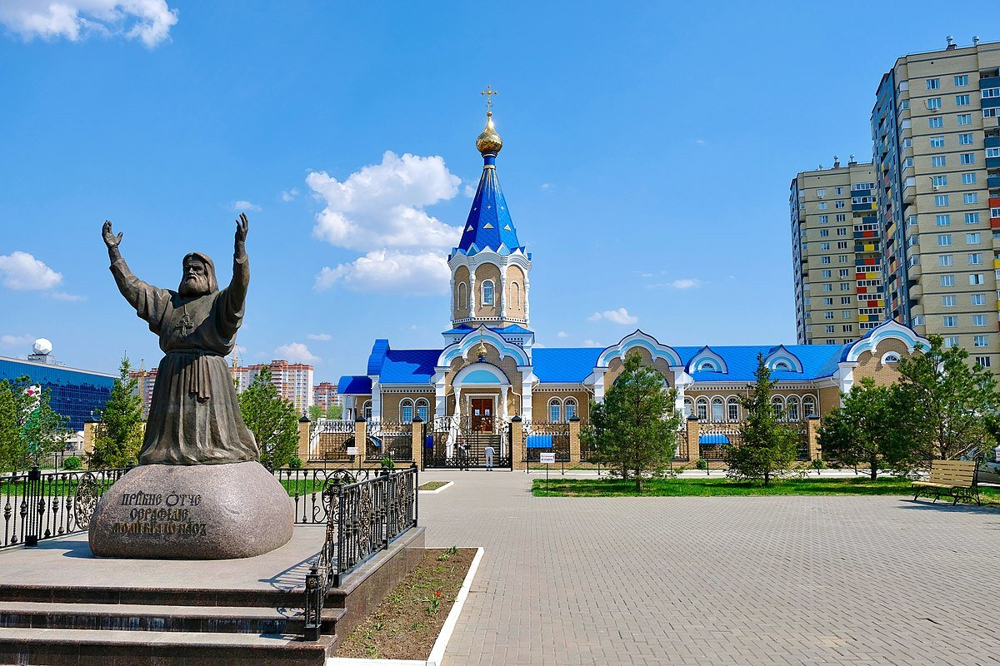
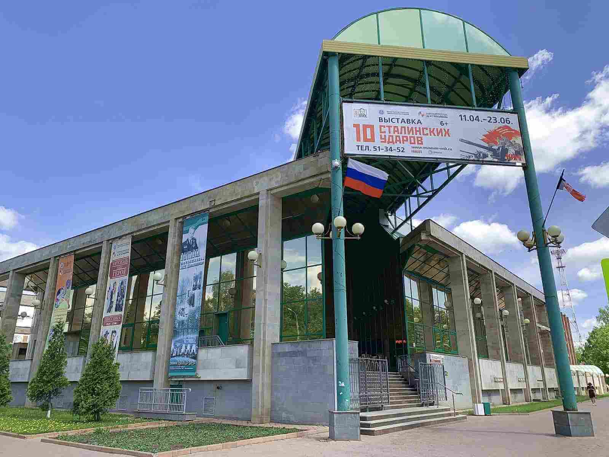
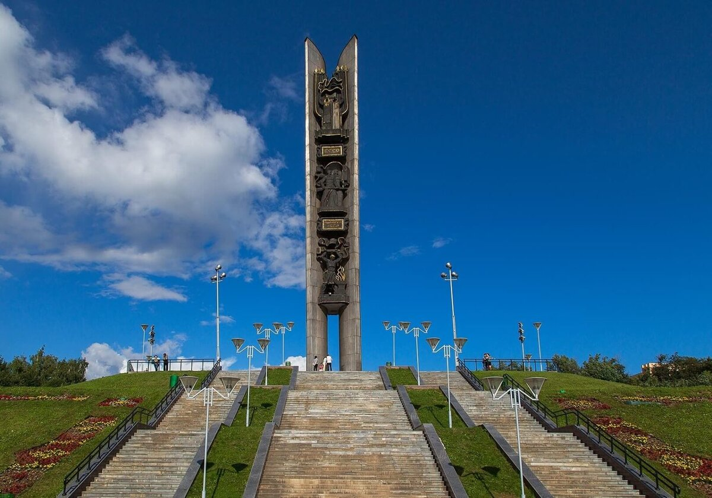
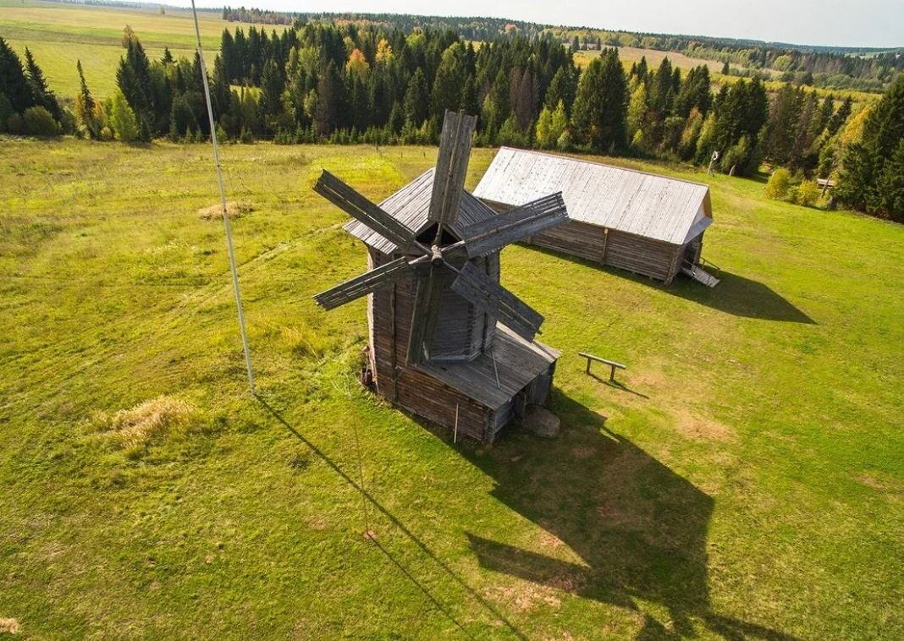
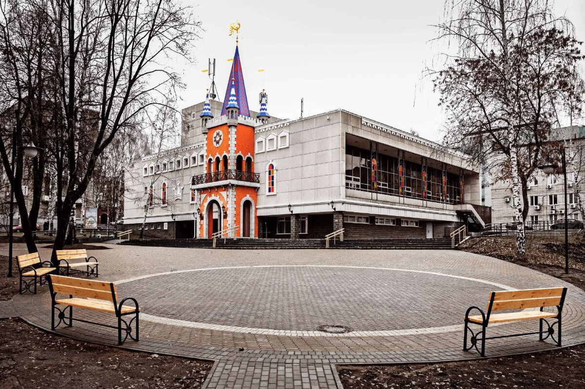

Какие достопримечательности посетить
Куда сходить погулять
Где поесть
Где остановиться
Menu
Достопримечательности Ижевска

Свято-Михайловский собор
×

Ижевский мотомузей Кожушковых
×

Государственный русский драматический театр Удмуртии
×
Музей завода «Ижмаш» и Памятник ижевским оружейникам
×
Национальный музей имени Кузебая Герда
×

Театр оперы и балета имени П. И. Чайковского
×

Храм в честь Серафима Саровского
×
Памятник крокодилу
×

Музей имени М. Т. Калашникова
×

Монумент «Дружба народов»
×

Музей-заповедник Лудорвай (15 км от Ижевска)
×

Кукольный театр
×